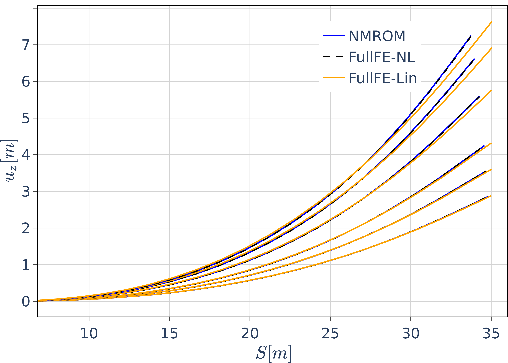
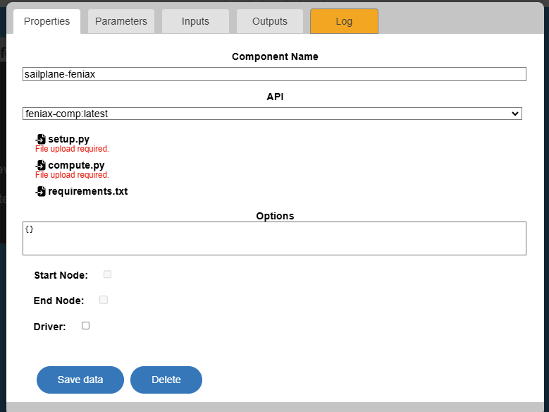

12. A nonlinear sailplane wing model with FENIAX#
 Load tutorial into dapta app.
Load tutorial into dapta app.
 View files on Github.
View files on Github.
Duration: 10 min
This example replicates the sailplane example from the FENIAX repository and demonstrates the ability to modify analysis parameters and export outputs automatically through the dapta interface.
Note: This component uses python 3.12 - for details of the software available in this component see FAQS - What software can I run in a component?
{kind=link}
12.1. Component description#
There is a single FENIAX component in this example. In future examples, we will connect FENIAX components to other components.
The static equilibrium of the aircraft under prescribed loads is first studied with follower loads normal to the wing applied at the tip of each wing (nodes 25 and 48).
The response for an increasing load stepping of 200, 300, 400, 480 and 530 KN is computed and compared to reference NASTRAN linear and nonlinear solutions.
Then a convergence analysis with the number of modes in the solution is performed.
Component inputs are the number of modes used for the convergence study. The output is the array of wing z-deflections for the 530 KN load case (in addition to the zip file of the output folder structure from FENIAX).
12.2. Create the component#
Navigate to the dashboard and create a blank workspace by selecting New (if required).
Right-click in the workspace and select Add Empty Node.
This creates an empty template component in your workspace.
Select the component to edit it.
12.2.1. Properties#
The component interface opens on the Properties tab. This is where you define the core properties of your component.
Fill in a component name, sailplane-feniax, and select the feniax-comp:latest component API.
Press the tab key or click within the component interface to validate the selected API. This triggers the display of a list of API input files, as shown below.
{kind=link}
Note
Component Names should only contain lower case letters a-z, numbers 0-9 and dash (-), without spaces.
Warning
Clicking outside the component interface closes the component without saving changes.
We can see that the feniax-comp API has three input files:
setup.pycompute.pyrequirements.txt
The first two files are required and the last one is optional. You can inspect the sailplane example file contents below.
The requirements.txt file is not required here as the python code doesn’t import any third-party python packages.
The setup.py module has to include a setup function that returns data that will be available to the compute function. Here we set the type (integer) for the number of modes inputs.
The compute.py module has to include a compute function that returns a dictionary of data, which includes the component outputs dictionary.
from datetime import datetime
def setup(
inputs: dict = {"design": {}, "implicit": {}, "setup": {}},
outputs: dict = {"design": {}, "implicit": {}, "setup": {}},
parameters: dict = {
"user_input_files": [],
"inputs_folder_path": "",
"outputs_folder_path": "",
},
) -> dict:
"""A user editable setup function.
Parameters
----------
inputs: dict
The component Inputs sorted by type (design, implicit or setup).
outputs: dict
The component Outputs sorted by type (design, implicit or setup).
parameters: dict
The component Parameters as defined in the component 'Parameters' tab.
Includes the following special keys:
'user_input_files': list of user-uploaded input file filenames
'inputs_folder_path': path to all user and connection input files (str)
'outputs_folder_path': path to component outputs folder (str)
Returns
-------
dict
dictionary of JSON-serialisable keys and values, including:
inputs: dict, optional
The setup function can assign values to input keys, but the inputs
keys should not be modified.
outputs: dict, optional
The setup function can assign values to output keys, but the outputs
keys should not be modified.
parameters: dict, optional
The setup function can add key/value pairs to the parameters dict,
but the existing key/value pairs cannot be modified.
partials: dict, optional
The derivatives of the component's "design" outputs with respect to its
"design" inputs, used for gradient-based design optimisation Runs.
message: str, optional
A setup message that will appear in the Run log.
"""
# initialise setup_data keys
number_of_modes = [
key for key in inputs["design"] if key.startswith("number_of_modes")
]
for case in number_of_modes:
# set to int
inputs["design"][case] = int(inputs["design"][case])
message = f"{datetime.now().strftime('%Y%m%d-%H%M%S')}: Setup completed."
return {"message": message, "inputs": inputs}
import os
from datetime import datetime
from pathlib import Path
import glob
import zipfile
import plotly.express as px
import pyNastran.op4.op4 as op4
import matplotlib.pyplot as plt
import shutil
import jax.numpy as jnp
import jax
import pandas as pd
import feniax.preprocessor.configuration as configuration # import Config, dump_to_yaml
from feniax.preprocessor.inputs import Inputs
import feniax.feniax_main
import feniax.preprocessor.solution as solution
import feniax.unastran.op2reader as op2reader
import feniax.plotools.uplotly as uplotly
from tabulate import tabulate
from ruamel.yaml import YAML
# RUN CASES
import time
TIMES_DICT = dict()
SOL = dict()
CONFIG = dict()
def compute(
inputs: dict = {"design": {}, "implicit": {}, "setup": {}},
outputs: dict = {"design": {}, "implicit": {}, "setup": {}},
partials: dict = {},
options: dict = {},
parameters: dict = {
"user_input_files": [],
"inputs_folder_path": "",
"outputs_folder_path": "",
},
) -> dict:
"""A user editable compute function.
Here the compute function copies input files to the output folder.
Parameters
----------
inputs: dict
The component Inputs sorted by type (design, implicit or setup).
outputs: dict
The component Outputs sorted by type (design, implicit or setup).
partials: dict, optional
The derivatives of the component's "design" outputs with respect to its
"design" inputs, used for gradient-based design optimisation Runs.
options: dict, optional
component data processing options and flags, inc. : "stream_call",
"get_outputs", "get_grads"
parameters: dict
The component Parameters as returned by the setup function.
Returns
-------
dict
dictionary of JSON-serialisable keys and values, including:
outputs: dict, optional
The compute function can assign values to output keys, but the outputs
keys should not be modified.
partials: dict, optional
The compute function can assign values to partials keys, but the
partials keys should not be modified.
message: str, optional
A compute message that will appear in the Run log.
"""
print("Starting user function evaluation.")
run_folder = Path(parameters["outputs_folder_path"])
cwd = os.getcwd()
os.chdir(run_folder)
# delete previous results
output_zip = run_folder / "output_files.zip"
if output_zip.is_file():
shutil.rmtree(output_zip)
# create results folders
os.mkdir("./figs")
os.mkdir("./results")
os.chdir("./results")
u_sp, u_spl = load_NASTRAN_results()
number_of_modes_inputs = [
key for key in inputs["design"] if key.startswith("number_of_modes")
]
if number_of_modes_inputs:
for case in number_of_modes_inputs:
# rotate a fibre direction in the orientations parameter
tree = case.split(".")
case_name = tree[1]
parameters["number_of_modes"][case_name] = inputs["design"][case]
number_of_modes = parameters["number_of_modes"]
print(f"Input mode cases are: {str(number_of_modes)}")
generate_data(number_of_modes)
postprocess(u_sp, u_spl)
os.chdir(cwd)
# zip all data in outputs folder to be able to recover it with structure
result_files = [
Path(f) for f in glob.glob("**/*.*", recursive=True, root_dir=run_folder)
]
with zipfile.ZipFile(output_zip, mode="w") as archive:
for file in result_files:
if not (run_folder / file).is_file():
raise FileNotFoundError(f"Cannot find output file {file}")
archive.write(run_folder / file, arcname=file)
shutil.rmtree(run_folder / "results")
shutil.rmtree(run_folder / "figs")
message = f"{datetime.now().strftime('%Y%m%d-%H%M%S')}: Completed compute."
print(message)
return {"message": message}
def load_NASTRAN_results():
examples_path = feniax.PATH / "../examples"
SP_folder = examples_path / "SailPlane"
# nastran_path = wingSP_folder / "NASTRAN/"
op2model = op2reader.NastranReader(
SP_folder / "NASTRAN/static400/run.op2",
SP_folder / "NASTRAN/static400/run.bdf",
static=True,
)
op2model.readModel()
t_sp, u_sp = op2model.displacements()
op2modell = op2reader.NastranReader(
SP_folder / "NASTRAN/static400/run_linear.op2",
SP_folder / "NASTRAN/static400/run_linear.bdf",
static=True,
)
op2modell.readModel()
t_spl, u_spl = op2modell.displacements()
sp_error3d = jnp.load(examples_path / "SailPlane/sp_err.npy")
return u_sp, u_spl
def run(input1, **kwargs):
jax.clear_caches()
label = kwargs.get("label", "default")
t1 = time.time()
config = configuration.Config(input1)
sol = feniax.feniax_main.main(input_obj=config)
t2 = time.time()
TIMES_DICT[label] = t2 - t1
SOL[label] = sol
CONFIG[label] = config
def save_times():
pd_times = pd.DataFrame(dict(times=TIMES_DICT.values()), index=TIMES_DICT.keys())
pd_times.to_csv("./run_times.csv")
def get_inputs():
SP_folder = feniax.PATH / "../examples/SailPlane"
inp = Inputs()
inp.engine = "intrinsicmodal"
inp.fem.eig_type = "inputs"
inp.fem.connectivity = dict(
FuselageFront=["RWingInner", "LWingInner"],
FuselageBack=["BottomTail", "Fin"],
RWingInner=["RWingOuter"],
RWingOuter=None,
LWingInner=["LWingOuter"],
LWingOuter=None,
BottomTail=["LHorizontalStabilizer", "RHorizontalStabilizer"],
RHorizontalStabilizer=None,
LHorizontalStabilizer=None,
Fin=None,
)
inp.fem.folder = Path(SP_folder / "FEM/")
inp.fem.num_modes = 50
inp.driver.typeof = "intrinsic"
inp.simulation.typeof = "single"
inp.systems.sett.s1.solution = "static"
inp.systems.sett.s1.solver_library = "diffrax"
inp.systems.sett.s1.solver_function = "newton"
inp.systems.sett.s1.solver_settings = dict(
rtol=1e-6, atol=1e-6, max_steps=50, norm="linalg_norm", kappa=0.01
)
# inp.systems.sett.s1.solver_library = "scipy"
# inp.systems.sett.s1.solver_function = "root"
# inp.systems.sett.s1.solver_settings = dict(method='hybr',#'krylov',
# tolerance=1e-9)
inp.systems.sett.s1.xloads.follower_forces = True
inp.systems.sett.s1.xloads.follower_points = [[25, 2], [48, 2]]
inp.systems.sett.s1.xloads.x = [0, 1, 2, 3, 4, 5, 6]
inp.systems.sett.s1.xloads.follower_interpolation = [
[0.0, 2e5, 2.5e5, 3.0e5, 4.0e5, 4.8e5, 5.3e5],
[0.0, 2e5, 2.5e5, 3.0e5, 4.0e5, 4.8e5, 5.3e5],
]
inp.systems.sett.s1.t = [1, 2, 3, 4, 5, 6]
return inp, SP_folder
# plotting functions
def fig_out(name, figformat="png", update_layout=None):
def inner_decorator(func):
def inner(*args, **kwargs):
fig = func(*args, **kwargs)
if update_layout is not None:
fig.update_layout(**update_layout)
# fig.show()
figname = f"figs/{name}.{figformat}"
fig.write_image(f"../{figname}", scale=6)
return fig, figname
return inner
return inner_decorator
def fig_background(func):
def inner(*args, **kwargs):
fig = func(*args, **kwargs)
# if fig.data[0].showlegend is None:
# showlegend = True
# else:
# showlegend = fig.data[0].showlegend
fig.update_xaxes(
titlefont=dict(size=20),
tickfont=dict(size=20),
mirror=True,
ticks="outside",
showline=True,
linecolor="black",
# zeroline=True,
# zerolinewidth=2,
# zerolinecolor='LightPink',
gridcolor="lightgrey",
)
fig.update_yaxes(
tickfont=dict(size=20),
titlefont=dict(size=20),
zeroline=True,
mirror=True,
ticks="outside",
showline=True,
linecolor="black",
gridcolor="lightgrey",
)
fig.update_layout(
plot_bgcolor="white",
yaxis=dict(zerolinecolor="lightgrey"),
showlegend=True, # showlegend,
margin=dict(autoexpand=True, l=0, r=0, t=2, b=0),
)
return fig
return inner
def fn_spError(sol_list, config, u_sp, print_info=True):
sol_sp = [solution.IntrinsicReader(f"./SP{i}") for i in range(1, 6)]
err = {f"M{i}_L{j}": 0.0 for i in range(1, 6) for j in range(6)}
for li in range(6): # loads
for mi in range(1, 6): # modes
count = 0
r_spn = []
r_sp = []
for index, row in config.fem.df_grid.iterrows():
r_spn.append(u_sp[li, row.fe_order, :3] + config.fem.X[index])
r_sp.append(sol_sp[mi - 1].data.staticsystem_s1.ra[li, :, index])
# print(f"nas = {r_spn} , {r_sp}")
# count += 1
r_spn = jnp.array(r_spn)
r_sp = jnp.array(r_sp)
err[f"M{mi}_L{li}"] += jnp.linalg.norm(
r_spn - r_sp
) # / jnp.linalg.norm(r_spn)
err[f"M{mi}_L{li}"] /= len(r_sp)
if print_info:
print(f"**** LOAD: {li}, NumModes: {mi} ****")
print(err[f"M{mi}_L{li}"])
return err
def fn_spWingsection(sol_list, config, u_sp, u_spl):
sol_sp = [solution.IntrinsicReader(f"./SP{i}") for i in range(1, 6)]
r_spn = []
r_spnl = []
r_sp = []
for li in range(6): # loads
for mi in [4]: # range(1,6): # modes
r_spni = []
r_spnli = []
r_spi = []
r_sp0 = []
for index, row in config.fem.df_grid.iterrows():
if row.fe_order in list(range(20)):
r_sp0.append(config.fem.X[index])
r_spni.append(u_sp[li, row.fe_order, :3] + config.fem.X[index])
r_spnli.append(u_spl[li, row.fe_order, :3] + config.fem.X[index])
r_spi.append(sol_sp[mi - 1].data.staticsystem_s1.ra[li, :, index])
# print(f"nas = {r_spn} , {r_sp}")
# count += 1
r_spn.append(jnp.array(r_spni))
r_spnl.append(jnp.array(r_spnli))
r_sp.append(jnp.array(r_spi))
r_sp0 = jnp.array(r_sp0)
return r_sp0, r_sp, r_spn, r_spnl
@fig_background
def plot_spWingsection(r0, r, rn, rnl):
fig = None
# colors=["darkgrey", "darkgreen",
# "blue", "magenta", "orange", "black"]
# dash = ['dash', 'dot', 'dashdot']
modes = [5, 15, 30, 50, 100]
for li in range(6):
if li == 0:
fig = uplotly.lines2d(
(r[li][:, 0] ** 2 + r[li][:, 1] ** 2) ** 0.5,
r[li][:, 2] - r0[:, 2],
fig,
dict(name=f"NMROM", line=dict(color="blue", dash="solid")),
dict(),
)
fig = uplotly.lines2d(
(rn[li][:, 0] ** 2 + rn[li][:, 1] ** 2) ** 0.5,
rn[li][:, 2] - r0[:, 2],
fig,
dict(name=f"FullFE-NL", line=dict(color="black", dash="dash")),
dict(),
)
fig = uplotly.lines2d(
(rnl[li][:, 0] ** 2 + rnl[li][:, 1] ** 2) ** 0.5,
rnl[li][:, 2] - r0[:, 2],
fig,
dict(name=f"FullFE-Lin", line=dict(color="orange", dash="solid")),
dict(),
)
else:
fig = uplotly.lines2d(
(r[li][:, 0] ** 2 + r[li][:, 1] ** 2) ** 0.5,
r[li][:, 2] - r0[:, 2],
fig,
dict(showlegend=False, line=dict(color="blue", dash="solid")),
dict(),
)
fig = uplotly.lines2d(
(rn[li][:, 0] ** 2 + rn[li][:, 1] ** 2) ** 0.5,
rn[li][:, 2] - r0[:, 2],
fig,
dict(showlegend=False, line=dict(color="black", dash="dash")),
dict(),
)
fig = uplotly.lines2d(
(rnl[li][:, 0] ** 2 + rnl[li][:, 1] ** 2) ** 0.5,
rnl[li][:, 2] - r0[:, 2],
fig,
dict(showlegend=False, line=dict(color="orange", dash="solid")),
dict(),
)
fig.update_yaxes(title=r"$\large u_z [m]$")
fig.update_xaxes(title=r"$\large S [m]$", range=[6.81, 36])
fig.update_layout(legend=dict(x=0.6, y=0.95), font=dict(size=20))
# fig = uplotly.lines2d((rnl[:,0]**2 + rnl[:,1]**2)**0.5, rnl[:,2], fig,
# dict(name=f"NASTRAN-101",
# line=dict(color="grey",
# dash="solid")
# ),
# dict())
return fig
@fig_background
def fn_spPloterror(error):
loads = [200, 250, 300, 400, 480, 530]
num_modes = [5, 15, 30, 50, 100]
e250 = jnp.array([error[f"M{i}_L1"] for i in range(1, 6)])
e400 = jnp.array([error[f"M{i}_L3"] for i in range(1, 6)])
e530 = jnp.array([error[f"M{i}_L5"] for i in range(1, 6)])
fig = None
fig = uplotly.lines2d(
num_modes, e250, fig, dict(name="F = 250 KN", line=dict(color="red")), dict()
)
fig = uplotly.lines2d(
num_modes,
e400,
fig,
dict(name="F = 400 KN", line=dict(color="green", dash="dash")),
dict(),
)
fig = uplotly.lines2d(
num_modes,
e530,
fig,
dict(name="F = 530 KN", line=dict(color="black", dash="dot")),
dict(),
)
fig.update_xaxes(
title={"font": {"size": 20}, "text": "Number of modes"}
) # title="Number of modes",title_font=dict(size=20))
fig.update_yaxes(
title=r"$\Large \epsilon$",
type="log", # tickformat= '.1r',
tickfont=dict(size=12),
exponentformat="power",
# dtick=0.2,
# tickvals=[2e-2, 1e-2, 7e-3,5e-3,3e-3, 2e-3, 1e-3,7e-4, 5e-4,3e-4, 2e-4, 1e-4, 7e-5, 5e-5]
)
# fig.update_layout(height=650)
fig.update_layout(legend=dict(x=0.7, y=0.95), font=dict(size=20))
return fig
@fig_background
def fn_spPloterror3D(error, error3d):
loads = [200, 250, 300, 400, 480, 530]
fig = None
if error is not None:
fig = uplotly.lines2d(
loads,
error,
fig,
dict(
name="Error ASET", line=dict(color="red"), marker=dict(symbol="square")
),
dict(),
)
fig = uplotly.lines2d(
loads,
error3d,
fig,
dict(name="Error full 3D", line=dict(color="green")),
dict(),
)
fig.update_yaxes(type="log", tickformat=".0e")
fig.update_layout( # height=700,
# showlegend=False,
# legend=dict(x=0.7, y=0.95),
xaxis_title="Loading [KN]",
yaxis_title=r"$\Large \epsilon$",
)
return fig
@fig_background
def plot_spAD(rn, r0):
loads = [200, 250, 300, 400, 480, 530]
fig = None
x = list(range(1, 7))
y = [rn[i - 1][-1, 2] - r0[-1, 2] for i in x]
fig = uplotly.lines2d(
x,
y,
fig,
dict( # name="Error ASET",
# line=dict(color="red"),
# marker=dict(symbol="square")
),
dict(),
)
# fig.update_yaxes(type="log", tickformat= '.0e')
fig.update_layout( # height=700,
showlegend=False, xaxis_title=r"$\Large{\tau}$", yaxis_title="Uz [m]"
)
return fig
def generate_data(number_of_modes):
# number_of_modes = {"SP1": 5, "SP2": 15, "SP3": 30, "SP4": 50, "SP5": 100}
for name in number_of_modes.keys():
inp, _ = get_inputs()
inp.fem.num_modes = int(number_of_modes[name])
inp.driver.sol_path = Path(f"./{name}")
run(inp, label=name)
save_times()
def postprocess(u_sp, u_spl):
t1 = time.time()
# NOTE: correct config matrix names - default doesn't work
yaml = YAML()
yaml_dict = yaml.load(Path("SP1/config.yaml"))
yaml_dict["fem"]["Ka_name"] = "Ka.npy"
yaml_dict["fem"]["Ma_name"] = "Ma.npy"
yaml_dict["fem"]["grid"] = "structuralGrid"
yaml.dump(yaml_dict, Path("SP1/config.yaml"))
config = configuration.Config.from_file("SP1/config.yaml")
t2 = time.time()
print(f"Time for config: {t2-t1}")
t1 = time.time()
sol_sp = [solution.IntrinsicReader(f"./SP{i}") for i in range(1, 6)]
r_sp0, r_sp, r_spn, r_spnl = fn_spWingsection(sol_sp, config, u_sp, u_spl)
fig, figname = fig_out("SPWingsection")(plot_spWingsection)(
r_sp0, r_sp, r_spn, r_spnl
)
t2 = time.time()
print(figname)
print(f"Time for figure: {t2-t1}")
# # config = configuration.Config.from_file("SP1/config.yaml")
# # sol_sp = [solution.IntrinsicReader(f"./SP{i}") for i in range(1, 6)]
t1 = time.time()
sp_error = fn_spError(sol_sp, config, u_sp, print_info=True)
fig, figname = fig_out("SPstatic_3D")(fn_spPloterror)(sp_error)
t2 = time.time()
print(figname)
print(f"Time for figure: {t2-t1}")
if __name__ == "__main__":
compute()
For each file, copy the contents above into a text editor and save it locally. Make sure you include the ‘.py’ extension in the file name.
Next, select setup.py in the component interface to upload the corresponding file. A green tick and a file upload time stamp should appear to confirm that the upload was successful. Repeat for the compute.py file.
Check the boxes next to the Start Node and End Node options (since we only have one component in this Run), as shown below.
{kind=link}
Finally, select Save data to save the component and close the component interface.
In your work space, the component name should have updated and a green tick should appear next to it to indicate that the component is apparently valid. However, if you tried to run it now, you would get error messages as we haven’t actually defined the python function Parameters and Inputs yet - see below.
Note
Click the “Save” button in the top toolbar to save your workspace.
12.2.2. Parameters#
Select the component again to edit it, then select the Parameters tab and copy the following JSON object into the text box. Select Save data to save the edits.
{
{
"SP1": 5,
"SP2": 15,
"SP3": 30,
"SP4": 50,
"SP5": 100
},
"user_input_files": []
}
We define Parameters as values that the component needs to execute, but that are not Inputs from other Components.
For example, Parameters could be constant values or application related input files. For this example, we use the Parameters tab to define some default component input values, which are used to initialise the component in the compute function. For a more comprehensive use of Parameters see the example Chaining component analyses.
12.2.3. Inputs and Outputs#
Open the component to edit it and add the following JSON objects into the text boxes in the Inputs and Outputs tabs.
By defining Component Inputs and Outputs respectively, we can expose these values to other Run components, such as drivers.
We have explored this in the Simple optimisation problem tutorial.
Input Handles:
{
"number_of_modes.SP1": 10,
"number_of_modes.SP2": 20
}
Output Handles:
{
"deflection_output": 0
}
We will look at the Log tab in the next section.
Select Save data to save the component and close it. You should now be able to see some input and output handles appear on the left and right of the component in the workspace. Hover over the handles with your mouse cursor to view the names of the variables.
12.3. Component analysis#
All being well, you should now be able to launch a Run by selecting the play symbol ▶ in the Run controls interface. The control symbols will start to fade in and out as your Run is sent for analysis in the Cloud, this may take a few minutes the first time. Eventually, the Run should execute, after which you should see an alert window confirming that ‘The Run has completed successfully’. If you don’t get any messages, try to refresh your web browser page, or consult the FAQ section for troubleshooting suggestions.
We can now inspect the outputs of the Run.
12.3.1. The Run Log#
Select View Log in the interface controls to view a summary of the Run as a nested JSON text object.
The ‘time’ entry corresponds to the time at which the Run Log file was generated, while the time stamps in the messages that appear in the ‘run_output’ and ‘sailplane-feniax’ relate to the setup and compute execution times. The inputs and outputs of the sailplane-feniax component are available under the corresponding ‘sailplane-feniax’ entries.
To save a copy of the Run Log, select Close to return to the workspace view and then select Download. This should download two JSON files: the Run Log as ‘runlog.json’ and the copy of your work session as ‘dapta_input.json’.
12.3.2. The Component Log#
Select the component again and navigate to the Log tab.
Both the Run Log and the Component Log are updated as the Run executes, which allows us to monitor progress and view intermediary results.
The Component Log lists events related to the component in order of time of occurrence. A ‘SETUP’ event corresponds to the execution of the component’s setup function and a ‘COMPUTE’ event corresponds to the execution of the compute function, as defined in the setup.py and compute.py modules. The event name is followed by a number, that indicates the number of times the component has been executed during the current Run. Note that the Component Log is not cleared between successive Runs, but it will clear if you refresh the page.
The Component Log has another important function: if errors occur during the execution of the component, the Log will list an ‘ERROR’ event with a description of the error message and traceback information.
The Log tab also includes a download files snapshot link. Select this to download a zip file that contains all input and output files as they currently exist in your workspace for this component.
Save this data, along with the JSON formatted version of your session (‘dapta_input.json’) and a copy of the Run Log (‘runlog.json’), to allow you to re-load this example in the future, or to compare inputs and outputs with other Runs.
12.4. Clean-up#
You can delete a session by creating a new session (select New in from the interface controls) or by loading a JSON session file from your machine (select Open).
It may take a minute or so for the Cloud session to be reset.